La Tierra
El punto de partida: una Tierra a unas décadas de nosotros, con la agricultura al borde del colapso y una humanidad que ya no mira el cielo: aprendió a mirar el suelo. Todo lo que pasa después se mide contra este lugar — cada mundo, cada año perdido, cada promesa de volver.
Qué es
Nuestro planeta de origen, un futuro cercano que la película no se molesta en fechar. A primera vista es una granja más del medio oeste: maíz hasta el horizonte, camionetas, una casa de madera. Pero algo anda mal en voz baja. El blight, un tizón que salta de una especie a otra, ya se llevó el trigo y la okra. El maíz es lo último que resiste, y cuando caiga no hay otro cultivo esperando atrás.
Lo que mata no es sólo el hambre. El blight prospera consumiendo nitrógeno y va dejando el aire sin oxígeno: la última cosecha y la última respiración quedan a pocos años una de la otra. Frente a eso, la humanidad se replegó. Se cerraron las agencias espaciales, y en la escuela los libros de texto ahora enseñan que las misiones Apolo fueron un montaje para llevar a la quiebra a la Unión Soviética. Es un mundo que decidió administrar su decadencia en vez de pelearla.
En la historia
Es el punto de partida y el ancla emocional de todo el relato. Cooper, un ex piloto de pruebas reconvertido en agricultor, vive acá con su suegro y sus dos hijos, Tom y Murph. Cuando un mensaje escondido en el polvo de la habitación de Murph lo lleva hasta los restos de la NASA, le ofrecen pilotar la Endurance a través del agujero de gusano. Aceptar significa dejar a Murph sin saber si volverá ni cuándo.
Antes de irse, en el porche con Donald, Cooper deja caer la frase que ordena todo el viaje: «la humanidad nació en la Tierra; nunca fue su destino morir aquí». A Murph, en el último adiós, sólo le queda una promesa: «voy a volver» — la misma que repite hasta el final de la película.
Desde ahí, la película se cuenta como una distancia: cada planeta, cada año que la dilatación temporal le arranca, se mide contra la granja y contra la promesa de volver. La habitación de Murph, con su estantería de libros, es la primera imagen de Interstellar y el lugar al que todo intenta regresar. La Tierra no es sólo el hogar que se abandona; es la pregunta que ordena la trama: ¿se puede volver?
Rasgos distintivos
- El blight: un tizón que no sólo arrasa cultivo tras cultivo, también consume el nitrógeno del aire. Antes que el hambre, llega la asfixia.
- Tormentas de polvo que sepultan autos y campos, y obligan a comer con los platos y los vasos dados vuelta.
- El maíz como último cultivo viable; el trigo y la okra ya se perdieron.
- Una «generación de cuidadores»: escuelas que enseñan a bajar la vista, con libros corregidos que niegan la carrera espacial.
- La granja de los Cooper y la habitación de Murph: primer escenario de la película y punto de retorno de toda la historia.
- El polvo hace años que vive adentro de las casas: ventanas selladas con cinta, trapos bajo las puertas y una tos que los médicos ya no curan: aprendieron a convivir con ella.
- Restos de la era que la escuela niega: Cooper y Tom cazan en la camioneta un drone de la NASA que sobrevuela la granja y lo desarman para las cosechadoras.
En celuloide
Momentos de la Tierra en una tira que desfila sin cortes; el cursor o el foco la frenan para mirarla de cerca.


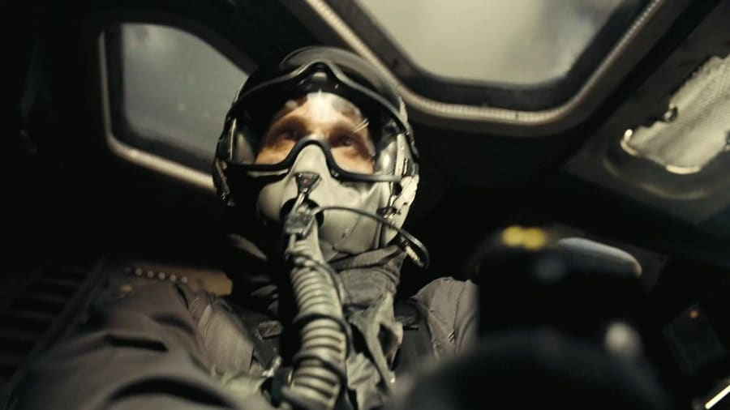
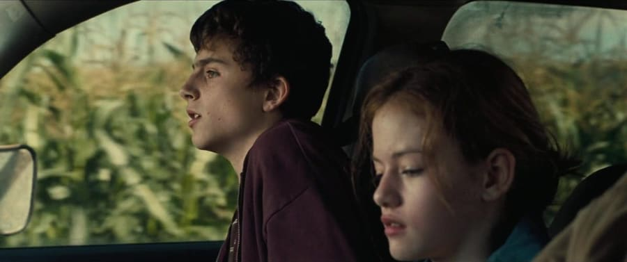
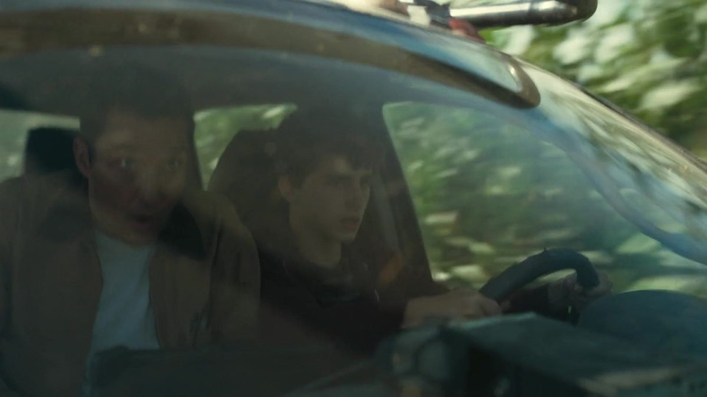
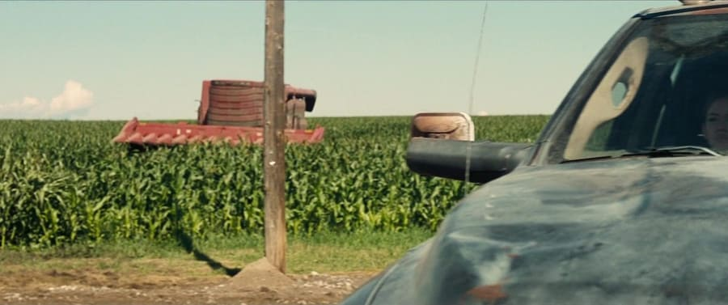
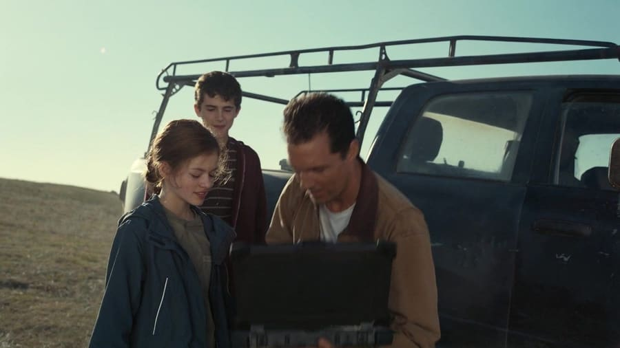
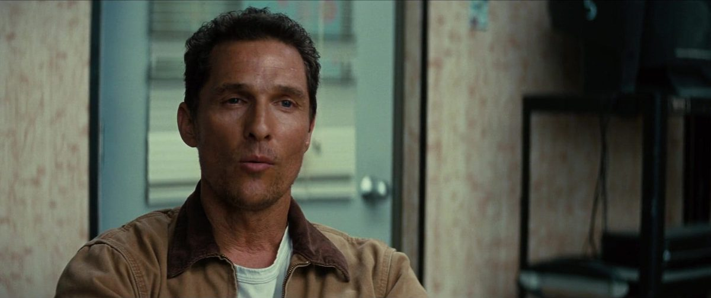
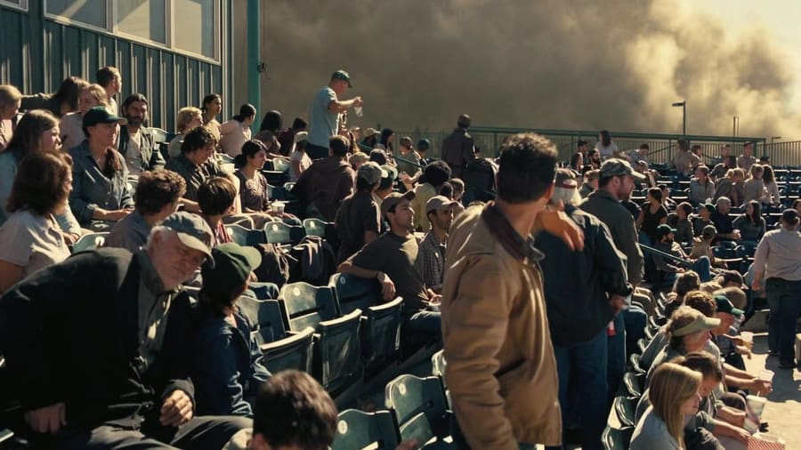
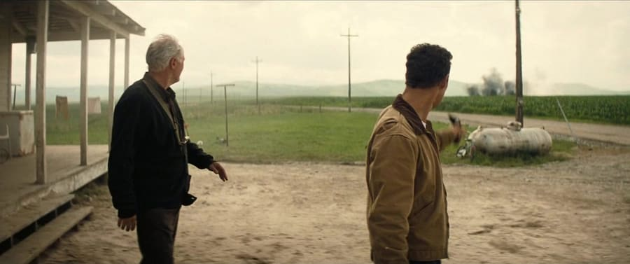
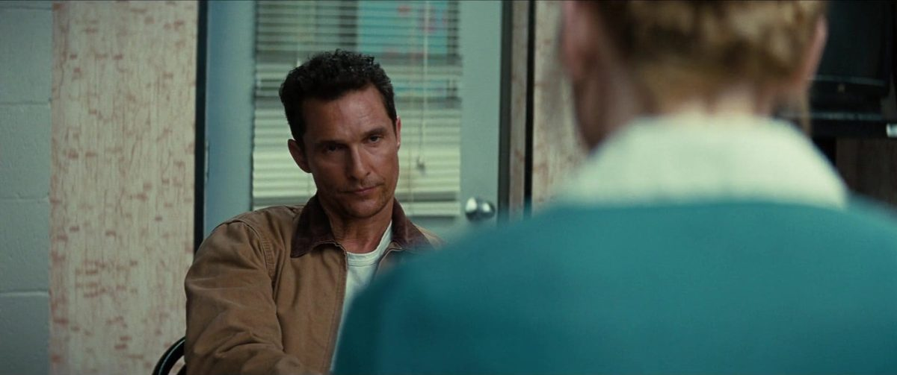
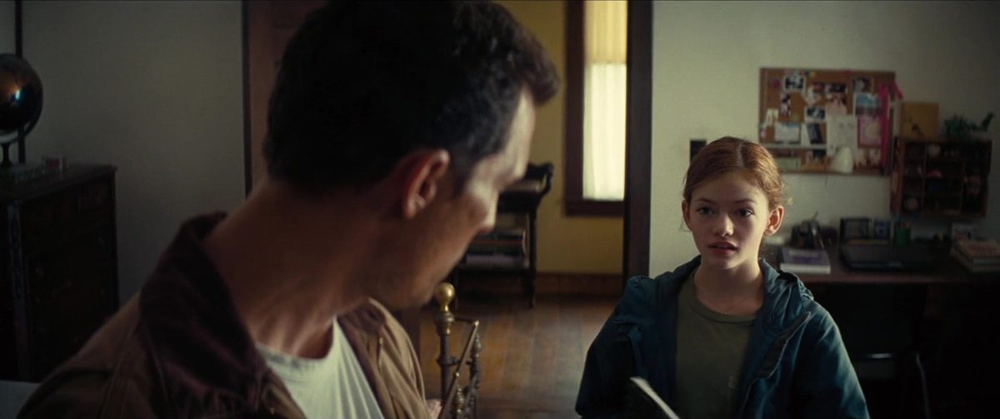
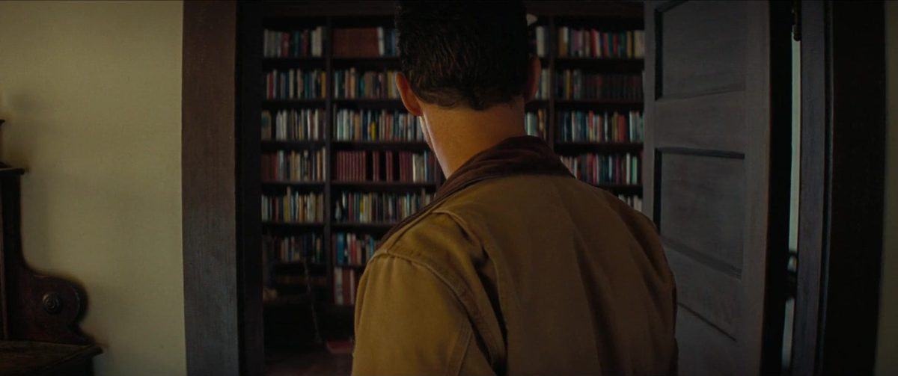
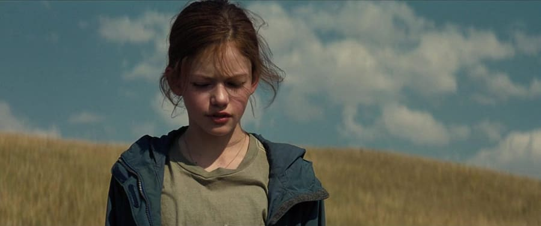
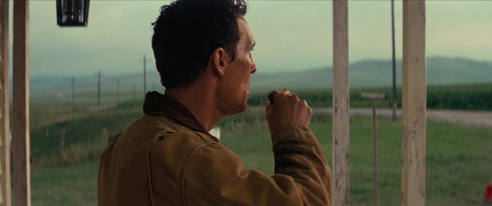
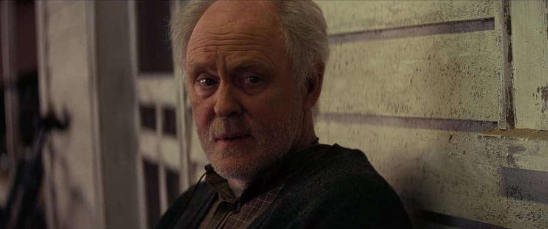
La ciencia
La Tierra es el reloj de referencia de la película: cada salto temporal —las siete años por hora en Miller, las décadas que Cooper pierde— se cuenta contra el tiempo que corre acá. Esa diferencia entre relojes según dónde estés y qué gravedad te rodea es la dilatación temporal. Acá, en cambio, el tiempo corre a escala humana: es el único lugar de la historia donde un año vale un año.